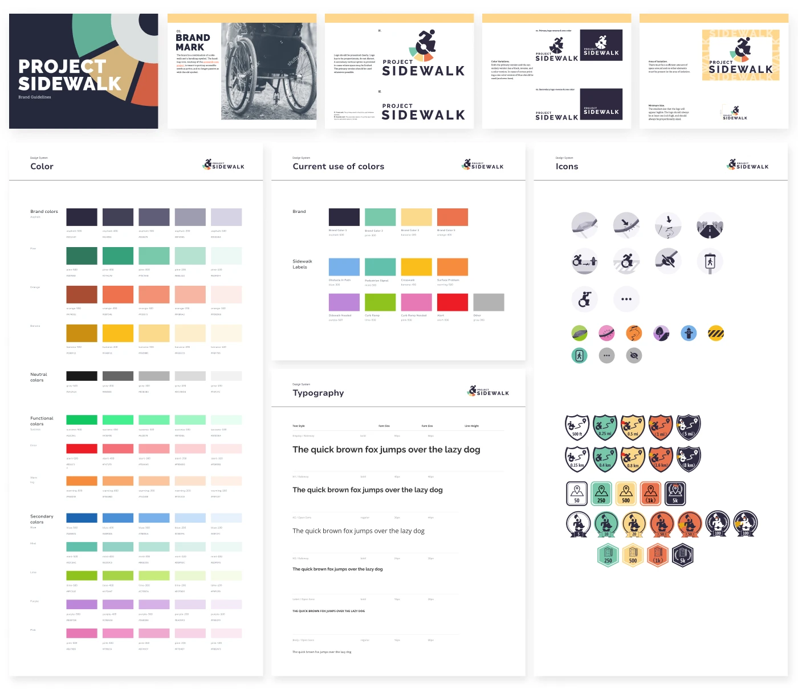

Scaling Civic Accessibility via a Zero-Defect Design System
Architecting a WCAG 2.2 AA compliant foundation for 11,000+ users.
Visit Live Projecta design system transformed civic tech
Short on time?
Get the quick highlights in a visual, swipeable format.
Growing Pains & Accessibility Debt
Project Sidewalk is an open-source civic platform that crowdsources urban accessibility data to train machine learning models. With over 350,000 labels collected, the platform had proven its value—but the internal architecture and user experience were brittle.
I identified three critical friction points holding the platform back:
Stakeholder Alignment at Scale
Redesigning a civic tech platform wasn't just about updating the UI — it required balancing the competing needs of three distinct user groups. A zero-defect design system was the only way to satisfy all of them simultaneously.
From Audit to Architecture
1. Data-Informed Diagnostics
Instead of relying on intuition, I audited the existing experience using both quantitative and qualitative data to prioritize high-impact interventions.
2. Architecting the System (The “Zero-Defect” Standard)
My goal was to shift from delivering polished screens to building resilient infrastructure that enabled sustainable growth.
3. Scaling & Cross-Functional Adoption
A design system is only as successful as its adoption rate. Working tightly alongside 1 PM and 2 developers, I treated the system not as static documentation, but as a working contract between design and engineering. Through phased rollouts, comprehensive spec handoffs, and collaborative alignment, I championed the system's integration across the broader organization.

Before vs. After: The System in Action
The design system wasn't just documentation—it was a working contract between design and engineering. Here's how it transformed the development workflow.

Outcome & Impact
What began as a UI cleanup evolved into a strategic effort to scale a civic tool through thoughtful, resilient design.
Systems Thinking in Civic Tech
A robust design system is not just a style guide—it is a tool for empowerment that allows developers to move faster and ensures that inclusivity is baked into the code, not just the pixels.
This project taught me that in civic tech, a design system isn't a luxury—it's a necessity for scale. When inclusivity is baked into the system architecture, every new feature inherits those values. The result is a platform where accessibility is automatic, not an afterthought.